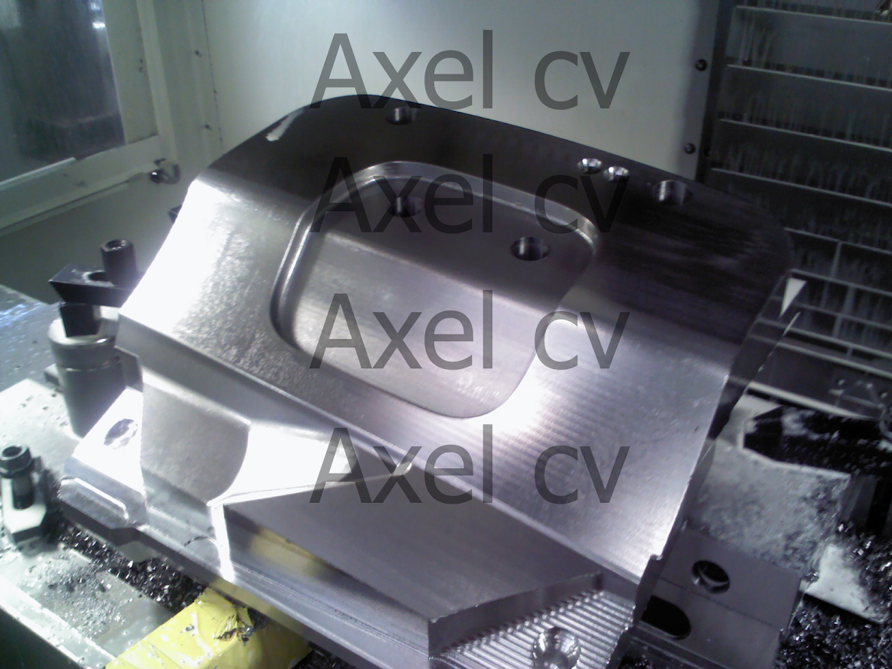
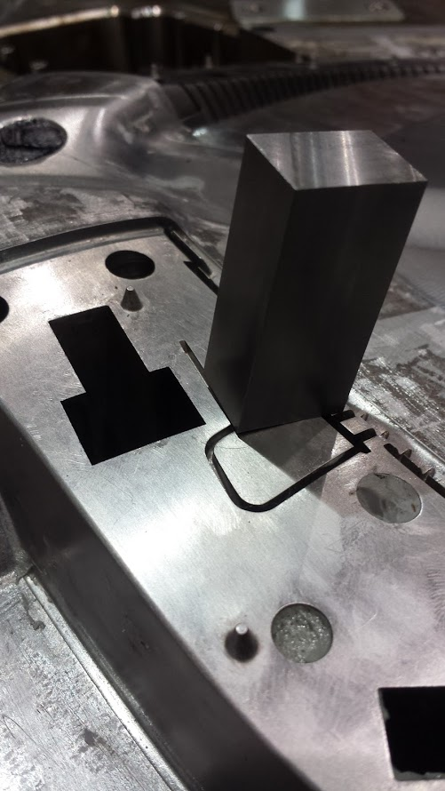
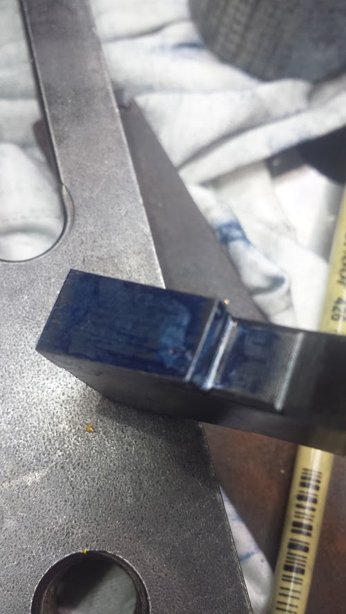
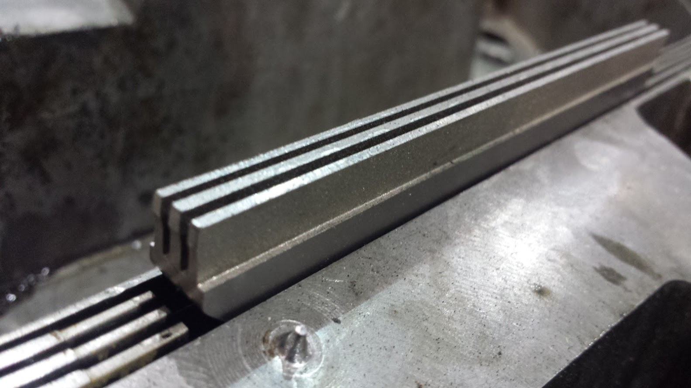
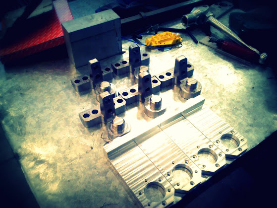
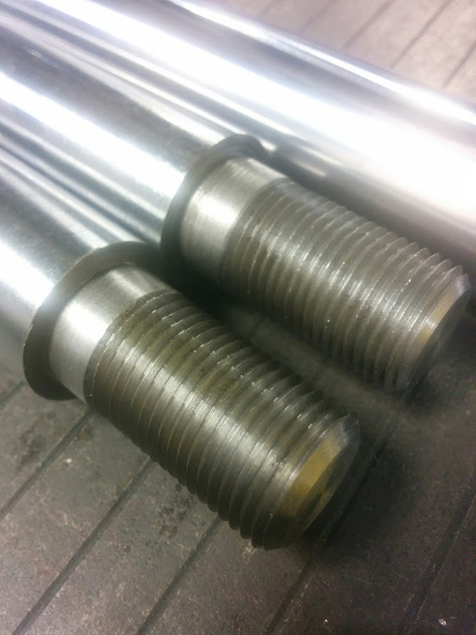

CAD/CAM
Galería de imágenes
Diseño y maquinado industrial
CAD (Computer Aided Design) El diseño asistido por computadora se basa en diferentes técnicas del área de graficación, desde las primitivas básicas como los algoritmos para crear líneas, puntos y figuras geométricas simples, hasta la construcción de representaciones 3D en espacios de dos dimensiones (como lo es el monitor de la computadora), además se han incorporado módulos para la simulación virtual de procesos, añadiendo movimiento a los componentes y módulos que utilizan técnicas de renderizado avanzadas. Su principal aplicación ha sido en el área de desarrollo industrial.
CAM (Computer Aided Manufacturing) La fabricación asistida por computadora está basada también en el área de graficación, solo que esta técnica se relacionada directamente con maquinaria industrial con el fin de facilitar y automatizar procesos.
Maquinado CNC
Los trabajos que se encuentran en la galería no son necesariamente los mejores que he realizado, aunque me hubiera gustado que así fuera, estos son solamente algunos a los que por alguna razón les tome una fotografía en su momento.
Material
D2
- Pieza para proceso de estampado
- Número de set-up's = 3
- Haas vf2



Maquinado CNC
Material
D2
- Pieza para proceso de estampado
- Número de set-up's = 1
- Haas vf2
- Posteriormente la pieza llevo corte mediante hilo por todo el contorno y tratamiento térmico para aumentar su dureza

Reparación (CNC,EDM, Maquinado convencional, soldadura TIG)
El proyecto que se muestra en las imágenes, es una reparación de molde de inyeccion de plastico.
- Fabricación de electrodo (Material: Grafito)
- Proceso de EDM para creación de cavidad para inserto en molde
- Fabricación de inserto (Material:p20)
- Ajuste de -0.001" para inserto en cavidad
- Soldadura para sujeción de inserto
- Pulido exterior de inserto
- Ajuste de parte movil en contacto con el nuevo inserto






Reparación (CNC,EDM, Maquinado convencional)
El proyecto que se muestra en las imágenes, es una reparación de molde de inyección de plástico.
- Fabricación de electrodo (Material:Grafito)
- Fabricación de inserto (Material:p20)
- Maquinado CNC de inserto nuevo
- Barrenos de sujeción de inserto nuevo (maquinado convencional)
- Proceso de EDM para creación de costillas en inserto



Maquinado CNC y convencional
Recopilación de maquinados de los que solo tengo una fotografía, diferentes aplicaciones
- Piezas de acero y aluminio
- Torno-Fresadora convencional




- © Untitled. All rights reserved.
- Design: HTML5 UP